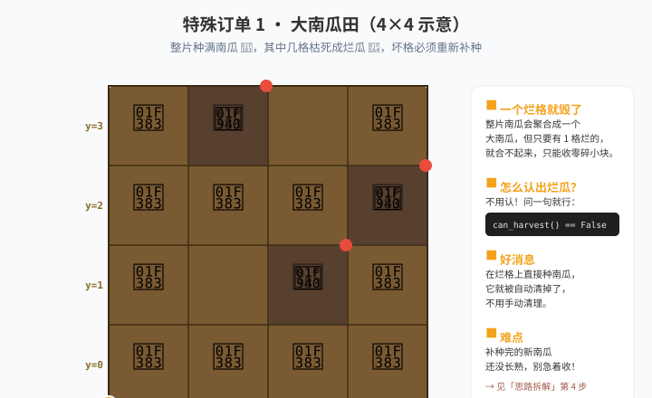

🎮 游戏进度 · 课前准备
📌 课前在游戏里做这些事
- 解锁 南瓜（Pumpkin）——种在翻好的土（
Grounds.Soil）上。 - 解锁 水（Items.Water）——浇水能让生长快约 5 倍，但挡不住枯死。
- 解锁 施肥（Items.Fertilizer）——对新苗施肥能缩短约 2 秒生长。
- 亲眼看一次枯死：种 9 颗南瓜等它们长大，会看到某个格子变成一个干瘪的南瓜——那就是烂格。
- 记住这条关键规则：在烂格上直接种东西，会自动清掉它，不用先清理。
- 学会用
can_harvest()判断一格能不能收——不用去认哪个是烂的，问一句就知道。
为什么单独设栏目特殊订单不教新语法，只考"你会不会把学过的拼起来"。如果某个知识点忘了，先回对应的 S 阶段补上——别硬扛。
🎯 特殊订单 · 大南瓜
大南瓜：把烂瓜清干净再一起收
客户要你：把烂格一个不漏地找出来，重新种上，一直补到整片田全是好南瓜，然后一次性收走。

💡 思路拆解（先自己读一遍再看）
第 1 步 · 种满：用两层 for 扫全田，每格先 till() 再 plant(Entities.Pumpkin)。
第 2 步 · 记账：再扫一遍全田，每格问一句"收得了不"——can_harvest() 返回 False 的格子，就是要记账的坏格，把坐标 bad.append([x, y]) 记下来。
第 3 步 · 补种：for pos in bad: 逐个飞回去，在坏格上重新种南瓜（种上去就自动清掉烂南瓜）。
第 4 步 · 收：bad 列表空了，说明整片都是好南瓜，回到任意一格 harvest()。
关键点：can_harvest() 返回 False 有两种可能——烂了，或者还没长熟。所以扫描之前要先等全田长熟（浇水能加速），否则会把没熟的南瓜也当成坏格去补种，反而把好苗种坏。
🔧 常见报错 · 卡住了先看这里
收上来是一堆小块，不是大南瓜 → 收割太早了，还有南瓜没长熟或者还有烂格。先确认 bad 列表真的空了。
怎么判断"这格要补种" → can_harvest()。返回 True = 好了不用管；返回 False = 要记账。
坏格列表越来越长 / 越补越乱 → 你把还没长熟的南瓜也当成烂瓜了。先等全田长熟再扫，别急着补种。
在烂格上 plant 报错 → 检查是否先 till() 翻土。烂格也要翻土才能种。
补种完还是收不到大南瓜 → 补种的新南瓜还没长熟。补种后要等，或者循环到全部 can_harvest() 为 True。
收完发现地上还有南瓜 → 收割会拆掉合并。整片要同时收，中途不要收别的。
🧠 换需求测试 · 真会了才过
- 换田大小：把 3×3 改成 5×5，代码要不要改？（用
get_world_size()就完全不用改） - 换检测方式：不用
Dead_Pumpkin，改用"种下去之前是不是空地"来判断烂格，行不行？ - 加肥料：补种时加一句
use_item(Items.Fertilizer)，会让新苗更快长熟。为什么要加在"刚种完"而不是"随便哪一格"？ - 口述题：为什么"记账补种"比"一直全田扫描"快？说清理由。
📌 老师注记这道题是列表综合实战：S3 的列表 + S3 的 for 遍历 + S2 的 if 判断 + L1 的双层 for，四样东西一起用。
大南瓜产量是 n³（边长 1–5），6×6 起是 6·n²——32×32 的田能收 6144 个。学生看到那个数字时会自己理解"为什么要优化"，不用讲。